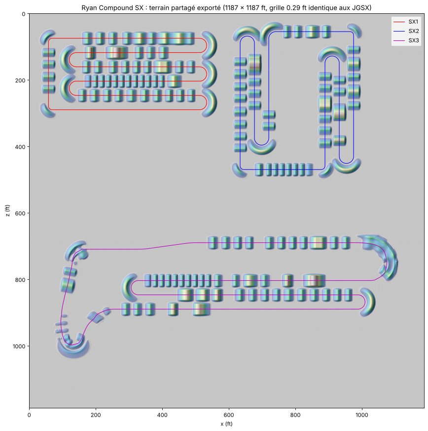
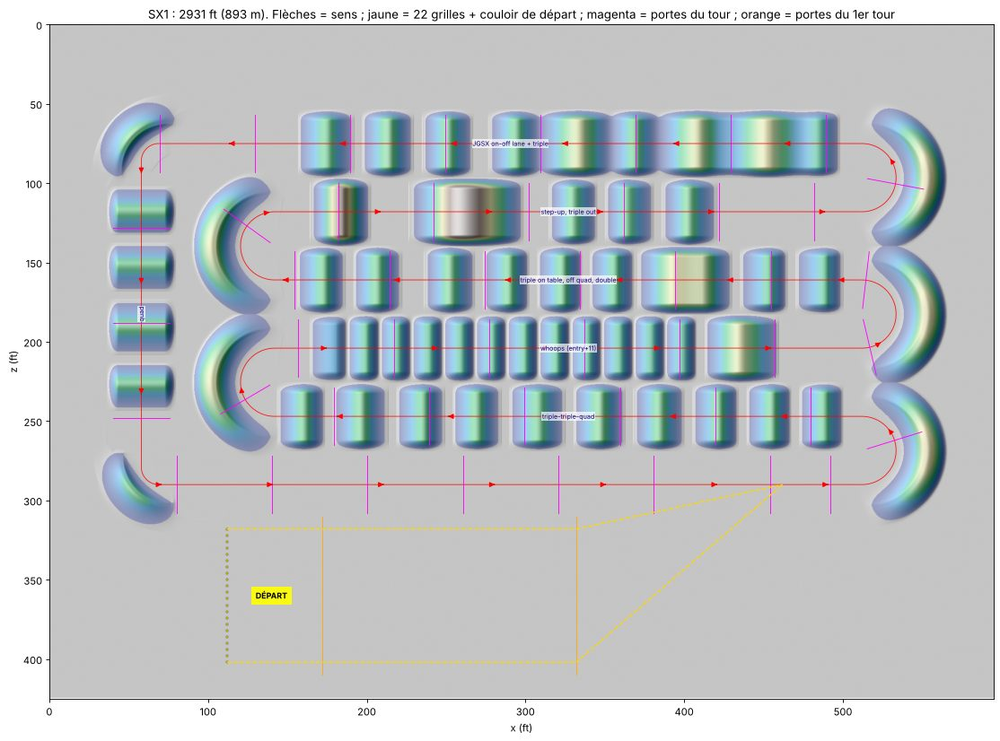
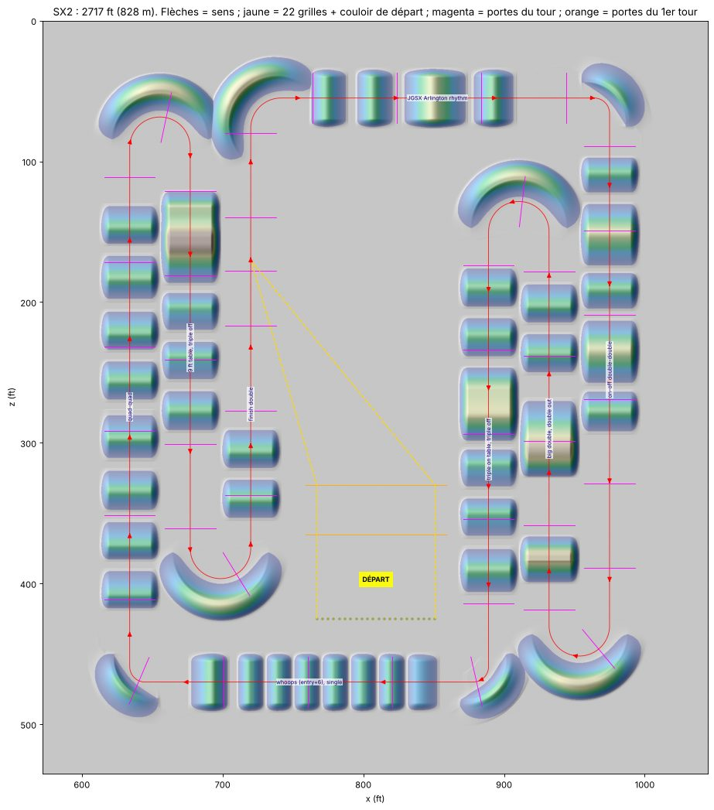
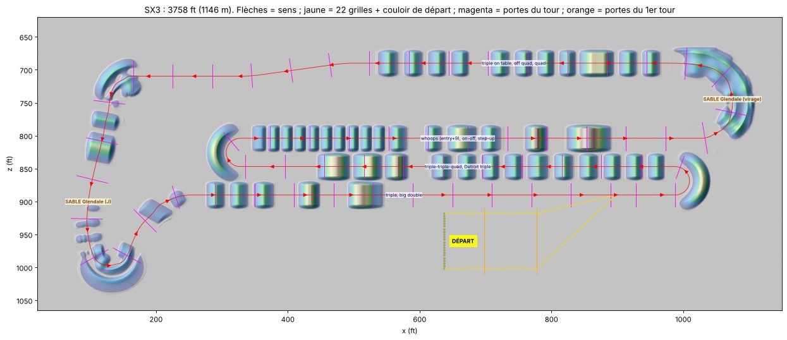
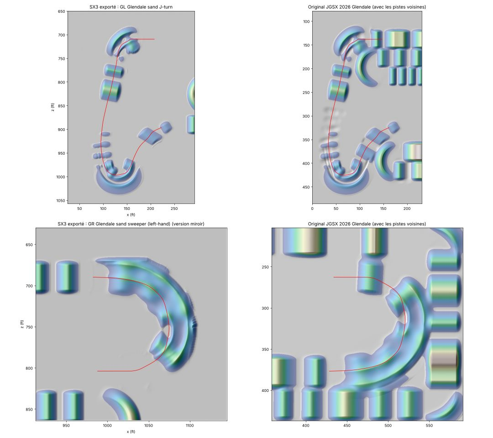
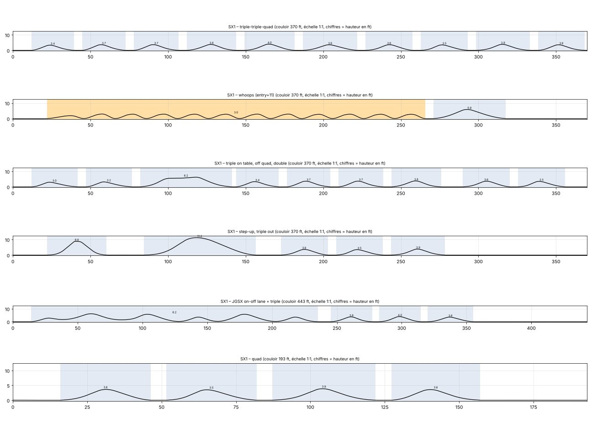
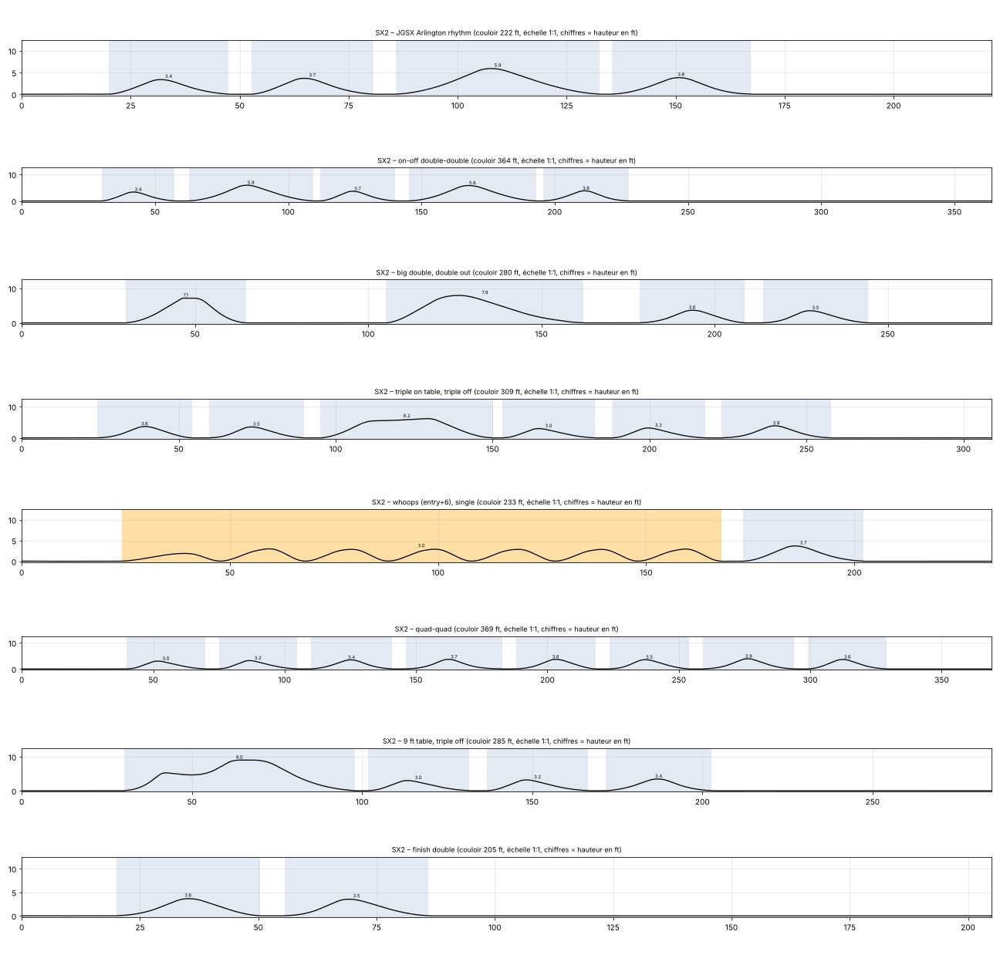
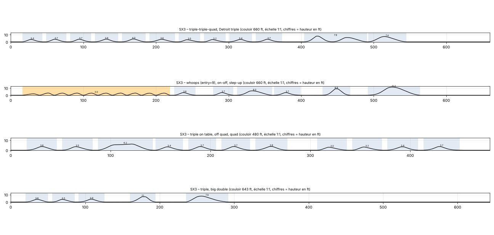
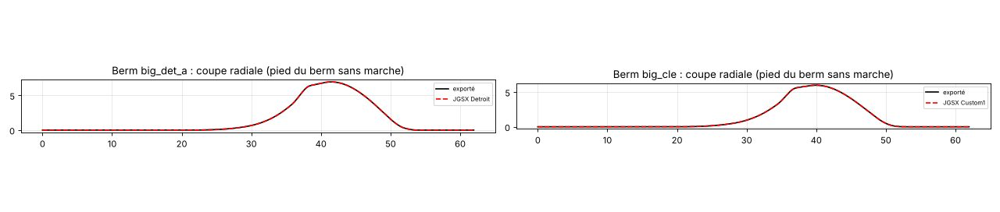

Trois supercross MX Simulator sur un terrain partagé. Version 3 : de vrais départs (22 grilles, ligne de départ séparée qui débouche sur un premier virage avec berm), le SX 2 démarre au milieu du stade, l'ancien virage plat a maintenant son berm, et le SX 3 reprend le sable de JGSX Glendale. Chaque bosse, table, whoop, berm et forme de sable est une copie exacte d'un élément mesuré sur les pistes JGSX 2026.
Terrain exporté, affiché avec une maille de 0.58 ft (SX 1, SX 2) et 0.87 ft (SX 3) ; le fichier du jeu est à 0.29 ft, la grille des JGSX. Les points jaunes sont les 22 grilles de départ. Glisser pour tourner, molette ou pincement pour zoomer, clic droit pour déplacer.
Les départs suivent la méthode des pistes JGSX 2026 : 22 grilles espacées de 4 ft, une ligne de départ qui ne fait pas partie du tour, puis un entonnoir qui rejoint le tour juste avant un premier virage avec berm. Sur les tours suivants, personne ne repasse par la grille. Aucun obstacle ni berm ne se trouve dans le couloir de départ : les 22 trajectoires, de chaque grille jusqu'au tour, ont été vérifiées sur le terrain exporté.
En pointillés jaunes : les bords du couloir de départ, de la grille jusqu'à la jonction avec le tour. Magenta : portes du tour. Orange : portes du premier tour seulement.




Les deux formes de sable de la photo sont reprises telles quelles depuis JGSX Glendale, sans les pistes voisines :
Le sol garde aussi les tiles de Glendale : « Sand Exit » sur tout le couloir de sable et « Sand Bump Solo » sur le berm d'entrée, avec la même physique (frottement, résistance au roulement, ornières). À la sortie du J, la piste repart avec un léger déport de 24°, comme sur Glendale.

Un « triple » part d'une bosse, passe la deuxième et se pose sur la troisième ; une table compte comme une bosse. Les bosses gardent leur forme et leur espacement JGSX : environ 5 ft de sol entre deux bosses, soit 34 à 38 ft de crête à crête.
| Couloir | Longueur | Éléments dans l'ordre de passage (hauteur en ft) |
|---|
Profil du terrain exporté le long de chaque couloir, à l'échelle 1:1. L'écart avec la mesure JGSX est inférieur à 0.06 ft partout.




Modèle simple : vitesse limitée par l'adhérence en virage, de 1.0 à 1.6 g, vitesse réduite de 15 % dans le sable. Les sauts ne sont pas modélisés.
RyanCompoundSX1, RyanCompoundSX2 et RyanCompoundSX3 de la version précédente.RyanCompoundSX_v3_tracks.zip et copie les trois dossiers sans les renommer dans ton dossier de pistes.RyanCompoundSX1 même si tu ne roules qu'un autre SX : il contient les textures, le ciel et le roost communs.Pour modifier : scripts/layouts_sx.py (couloirs, virages, départs), puis build_sx.py, export_sx.py et validate_sx.py.